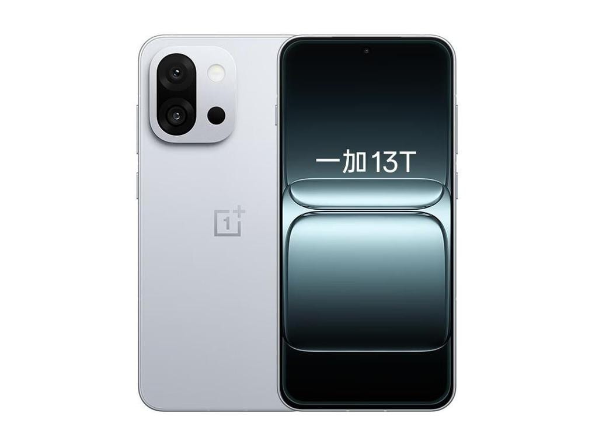

一加 1（一加手机初代）

「不将就」开山之作，旗舰配置仅售 1999。
客观评测
一加 1 用 1999 元的价格提供了 2014 年的顶级配置：骁龙 801、3GB 内存、5.5 英寸 1080p 屏幕和 3100mAh 可拆卸电池，直接把旗舰机价格打下来一半。砂岩黑与竹质后盖提供同价位绝无仅有的材质手感。短板是相机——硬件不差但夜景和白平衡调校偏弱，ColorOS 初版也不够成熟，好在官方鼓励刷机，CyanogenMod 适配让它成了刷机党的乐园。
主观点评
2014 年第一次听到'一加'和'不将就'时的兴奋，很多老机友至今记得。它证明了中国互联网手机可以既便宜又认真。砂岩黑摸上去像细砂纸，越用越贴手。邀请制让人又爱又恨，但当 1999 的真香旗舰终于递到手上，一切都值了。这是属于安卓极客黄金年代的一张入场券。
优点与不足
- 骁龙 801 加 3GB 内存仅售 1999，性价比震撼行业
- 官方支持解锁刷机，极客可玩性极高
- 砂岩黑后盖手感独特，辨识度拉满
- 拍照调校一般，成像与同期旗舰有差距
- 购买采用邀请制，抢购体验劝退普通用户
参数规格
| 屏幕 | 5.5 英寸 IPS，1920×1080 |
|---|---|
| 处理器 | 高通骁龙 801 |
| 内存 | 3GB RAM |
| 存储 | 16GB/64GB，支持 microSD 卡槽 |
| 摄像头 | 后置 1300 万像素（索尼 IMX214），前置 500 万像素 |
| 系统 | ColorOS（可刷 CyanogenMod） |
| 电池 | 3100mAh，可拆卸 |
| 网络 | 移动/联通双 4G |
| 特色 | 竹质／砂岩黑可更换后盖 |
| 散热 | 正常体积下温控表现良好 |
| 重量 | 约 160g |